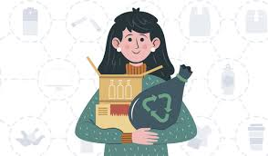

La eficiencia no significa sacrificar confort, significa obtener el mismo resultado usando menos energía. Iluminación: Reemplaza todos los focos incandescentes o halógenos por LED. Un LED consume hasta un 85% menos de electricidad y dura 20 veces más. Climatización: Es el mayor gasto en muchos hogares. Sella fugas en puertas y ventanas. Usa ventiladores de techo (consumen mucho menos que el A/C) y ajusta tu termostato (cada grado que subes en verano o bajas en invierno ahorra energía). Electrodomésticos: Al comprar uno nuevo, busca siempre la etiqueta Energy Star o la certificación de mayor eficiencia (A+++).
Acciones por una Energía Limpia
La energía más limpia es la que no se consume. La eficiencia y el ahorro son las herramientas más poderosas que tenemos como individuos. Cada kilovatio-hora (kWh) que ahorramos reduce la presión sobre el sistema y disminuye la necesidad de quemar combustibles fósiles. Estas acciones van desde cambiar hábitos hasta optimizar cómo usamos la tecnología.
1. Eficiencia Energética en el Hogar
2. Reducir el Consumo "Fantasma" (Standby)
Muchos aparatos electrónicos (TVs, consolas, microondas, cargadores de celular) siguen consumiendo electricidad incluso cuando están "apagados". Este es el "consumo vampiro" o "fantasma".
Acciones Clave
Desconecta: La forma más simple es desconectar los aparatos que no usas frecuentemente. Usa Multicontactos (Regletas): Conecta varios aparatos (ej. tu TV, consola y sistema de sonido) a un solo multicontacto con interruptor. Así, puedes apagar los tres completamente con un solo botón antes de dormir.
3. Adoptar la Movilidad Sostenible
El sector del transporte es uno de los mayores consumidores de petróleo. Cambiar cómo nos movemos es crucial. Prioriza tus pies: Caminar y usar la bicicleta son las únicas formas de transporte con cero emisiones. Usa Transporte Público: Mover a 40 personas en un autobús es infinitamente más eficiente que 40 autos individuales. Conducción Eficiente: Si debes usar auto, mantenlo bien afinado, con las llantas infladas correctamente, y evita acelerar o frenar bruscamente.
4. Consumo Consciente
Nuestra huella energética está oculta en todo lo que consumimos. Agua Caliente: Calentar agua (para bañarse o lavar) gasta muchísima energía (gas o electricidad). Toma duchas más cortas y lava tu ropa con agua fría siempre que sea posible. Dieta y Alimentos: La producción de carne, especialmente la de res, es increíblemente intensiva en energía (para producir el grano, transportarlo, operar la maquinaria, etc.). Reducir tu consumo de carne tiene un impacto energético positivo.

5. Apoyar la Transición Energética
El ahorro individual es clave, pero el cambio sistémico requiere políticas públicas. Exige Renovables: Participa cívicamente y vota por líderes que apoyen la inversión en energía solar, eólica y geotérmica, en lugar de subsidios a los combustibles fósiles. Apoya la Generación Distribuida: Promueve leyes que faciliten a las personas instalar sus propios paneles solares en techos y vender el excedente de energía a la red.
Proyectos de Energía Sostenible
Estos proyectos te permiten tomar el control de tu consumo energético. Desde realizar una auditoría para saber dónde estás desperdiciando, hasta generar tu propia electricidad, estos proyectos prácticos reducen tu factura de luz y tu huella de carbono.
Auditoría Energética
Aislamiento DIY
Calentador Solar
Mantenimiento
Cargador Solar
Cocina Solar
Bici-Generador
1. Auditoría Energética Casera
Antes de poder ahorrar, necesitas saber dónde estás gastando. Una auditoría casera te ayuda a identificar los "puntos calientes" de desperdicio en tu hogar.
Beneficios
Te da un plan de acción claro. Descubrirás si tu mayor problema son fugas de aire, un refrigerador viejo o el consumo fantasma, permitiéndote invertir tiempo y dinero donde más importa.
Componentes Clave
Necesitas una libreta y tu recibo de luz (para ver tu consumo base). Revisa fugas de aire en puertas y ventanas (con una vela o incienso, mira si el humo se mueve). Usa un medidor de vatios (Kill-A-Watt) para medir el consumo fantasma de tus aparatos uno por uno. Anota todo y prioriza.
2. Aislamiento Térmico de Puertas y Ventanas
Una enorme cantidad de energía se escapa (en invierno) o entra (en verano) a través de pequeñas rendijas. Sellar tu casa es uno de los proyectos con mayor retorno de inversión.
Beneficios
Reduce drásticamente tu necesidad de usar calefacción y aire acondicionado. Mantiene la casa más confortable y ahorra mucho dinero. Es mucho más barato que cambiar ventanas completas.
Componentes Clave
Para rendijas bajo las puertas, usa "burletes" o protectores de tela. Para los marcos de ventanas y puertas, usa tira de espuma adhesiva o sellador de silicona para rellenar los espacios. Para las ventanas en climas fríos, una película plástica aislante puede crear una barrera de aire.
3. Construcción de un Calentador Solar de Agua
Este es un proyecto más avanzado que usa la energía gratuita del sol para calentar el agua de tu ducha o cocina, reduciendo drásticamente tu consumo de gas o electricidad.
Beneficios
Ahorros masivos en tu factura de gas/luz. Utiliza energía 100% limpia y renovable. Funciona incluso en días parcialmente nublados y te da independencia energética.
Componentes Clave
Un sistema casero simple (termosifón) se puede construir con manguera negra o tubos de PVC/cobre pintados de negro, dispuestos en un serpentín dentro de una caja aislada (con madera y unicel) y cubierta con un vidrio o plástico (para crear efecto invernadero). Se conecta a un tanque de almacenamiento (tinaco) que debe estar elevado.

4. Mantenimiento para Eficiencia
Un aparato sucio o mal mantenido gasta mucha más energía para hacer el mismo trabajo.
Beneficios
Ahorra energía y dinero sin comprar nada nuevo. Alarga la vida útil de tus electrodomésticos.
Pasos Clave
Refrigerador: Limpia el serpentín (parrilla) trasero al menos una vez al año. El polvo acumulado lo obliga a trabajar extra. Asegúrate de que los empaques de la puerta sellen herméticamente (prueba con un billete). Lavadora/Secadora: Limpia el filtro de pelusa de la secadora en CADA uso. Una secadora con el filtro tapado es ineficiente y un riesgo de incendio.
5. Creación de un Cargador Solar USB
Un proyecto de electrónica básico que te permite cargar tus dispositivos (celular, power bank) directamente del sol.
Beneficios
Aprendes los fundamentos de la energía solar. Obtienes energía 100% gratuita y limpia para tus gadgets. Es ideal para campamentos, emergencias o simplemente para reducir tu consumo diario.
Componentes Clave
Necesitarás un pequeño panel solar (de 5V o 6V), un regulador de voltaje USB (un módulo 5V DC-DC step-down) para proteger tus dispositivos, y una carcasa (puede ser una caja de plástico o madera) para montar todo.
6. Construcción de una Cocina Solar de Caja
Una cocina solar de caja es un dispositivo simple que atrapa el calor del sol (efecto invernadero) para cocinar alimentos lentamente, como un horno holandés.
Beneficios
Cocina sin gastar gas ni electricidad. Es una forma de cocción lenta que deja los alimentos muy suaves. Es un proyecto educativo fantástico sobre el poder del sol.
Componentes Clave
Se construye con dos cajas de cartón (una dentro de la otra). El espacio entre ambas se rellena con material aislante (papel periódico arrugado, unicel). El interior de la caja pequeña se forra con cartulina negra (para absorber calor). La tapa lleva papel aluminio (para reflejar) y una cubierta de vidrio o plástico transparente.
7. Bici-Generador de Emergencia
Este es un proyecto avanzado y emblemático. Consiste en adaptar una bicicleta estática (o una normal en un rodillo) para mover un generador o alternador y producir electricidad con tu propia fuerza.
Beneficios
Generas electricidad limpia mientras haces ejercicio. Te da una conciencia real de cuánta energía física se necesita para encender un simple foco. Es un sistema de respaldo increíble en caso de apagones.
Componentes Clave
Necesitas una bicicleta, un motor/generador DC (un motor de scooter viejo funciona), una banda para conectar la rueda al motor, un controlador de carga, y una batería (de 12V) para almacenar la energía que produces. Puedes añadir un inversor para usar aparatos de 120V/220V.
Donativos por una Transición Energética
La transición de combustibles fósiles a energías limpias es la batalla central de nuestro tiempo contra el cambio climático. Estas organizaciones trabajan a nivel global y local para investigar, financiar e implementar soluciones renovables y luchar políticamente contra la industria de los combustibles fósiles.
1. RMI (Rocky Mountain Institute)
RMI es un "think-and-do tank". Son ingenieros, científicos y economistas que no solo investigan, sino que trabajan con las industrias más contaminantes (como el acero, cemento y transporte marítimo) para rediseñar sus procesos y hacerlos rentables y sostenibles. Se enfocan en soluciones de mercado a gran escala para la crisis climática.
2. SolarAid
Una organización con una misión increíblemente tangible: llevar luz solar limpia a comunidades rurales en África que no tienen acceso a la red eléctrica. Reemplazan las peligrosas lámparas de queroseno por pequeñas luces solares, mejorando la salud (menos humo), la educación (los niños pueden estudiar de noche) y la economía familiar (ahorran dinero en combustible).
3. GRID Alternatives
GRID Alternatives aborda la justicia climática y la justicia social al mismo tiempo. Su misión es instalar sistemas de energía solar en comunidades de bajos ingresos sin costo para las familias, ahorrándoles dinero en sus facturas. Además, usan las instalaciones como programas de capacitación laboral, preparando a personas para trabajos en la industria solar.

4. 350.org
Esta organización es la línea de frente del activismo climático. Construyen un movimiento global para detener nuevos proyectos de combustibles fósiles y lideran la campaña de desinversión, presionando a instituciones para que dejen de financiar económicamente a las compañías de carbón, petróleo y gas que causan la crisis.

5. Sierra Club
Es una de las organizaciones ambientales más antiguas y efectivas de EE.UU. Su campaña "Beyond Coal" (Más allá del Carbón) ha sido fundamental para retirar cientos de plantas de carbón en el país, evitando miles de muertes por contaminación del aire y previniendo millones de toneladas de CO2. Ahora se enfocan en detener la expansión del gas.